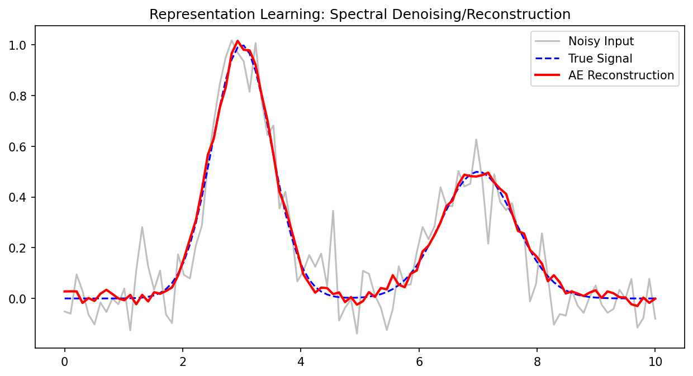
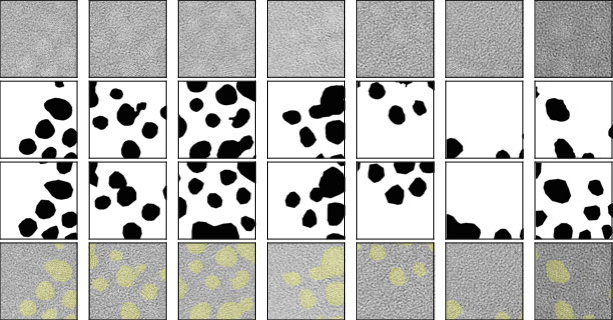
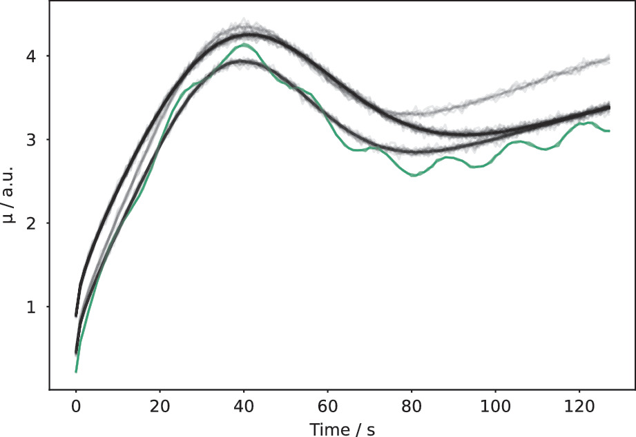

Mathematical Foundations of AI & ML
Unit 9: Representation Learning
Prof. Dr. Philipp Pelz
FAU Erlangen-Nürnberg


01. Title + Unit 9 positioning
- Unit 8 introduced probabilistic foundations. Unit 9 asks: what should the model actually see? {.fragment}
- The quality of the input representation determines the ceiling for any learning algorithm. {.fragment}
- Representation learning: letting the model discover useful features from raw data. {.fragment}
02. Learning outcomes for Unit 9
By the end of this lecture, students can:
- explain the manifold hypothesis and why high-dimensional data admits low-dimensional representations, {.fragment}
- contrast handcrafted features with learned representations, {.fragment}
- derive the autoencoder objective and relate it to PCA, {.fragment}
- apply autoencoders to compression, anomaly detection, and feature extraction. {.fragment}
03. Why features matter more than algorithms
- A good representation makes a simple model effective; a bad one makes even complex models fail. {.fragment}
- Traditional ML pipeline: raw data () feature engineering () model () prediction. {.fragment}
- Deep learning promise: raw data () learned representation () prediction — end-to-end. {.fragment}
04. The curse of dimensionality
- In high-dimensional spaces, data points become equidistant — distances lose meaning. {.fragment}
- To cover a (d)-dimensional space uniformly, sample size must grow exponentially with (d). {.fragment}
- Practical consequence: models need far more data in high dimensions, or we must reduce dimensionality. {.fragment}
05. The manifold hypothesis
- Key idea: real-world data does not fill the full ambient space (^d). {.fragment}
- Instead, data concentrates on or near a low-dimensional manifold embedded in (^d). {.fragment}
- Example: images of faces form a tiny subspace of all possible pixel arrays. {.fragment}
- Dimensionality reduction = finding this manifold. {.fragment}
06. Visual: Swiss roll and manifold structure
- The Swiss roll: 3D data that actually lives on a 2D surface. {.fragment}
- Linear methods (PCA) project onto a plane — they cannot “unroll” the manifold. {.fragment}
- Nonlinear methods can recover the intrinsic 2D structure. {.fragment}
- This illustrates why we need methods beyond PCA. {.fragment}
07. PCA recap (Unit 2)
- PCA finds the linear subspace that captures maximum variance: {.fragment}
- Compute covariance matrix (). {.fragment}
- Eigendecomposition: ( = ^). {.fragment}
- Project onto top-(k) eigenvectors. {.fragment}
- Optimal linear dimensionality reduction under MSE (Bishop 2006). {.fragment}
08. Limitations of PCA
- PCA can only find flat subspaces (hyperplanes through the origin). {.fragment}
- It fails when the data manifold is curved, folded, or has nonlinear structure. {.fragment}
- PCA also struggles with multi-modal data — it finds one global direction, not local structure. {.fragment}
- We need nonlinear alternatives. {.fragment}
09. Handcrafted features — historical approach
- Before deep learning, domain experts designed features manually: {.fragment}
- Spectroscopy: peak positions, widths, areas. {.fragment}
- Materials: grain size distribution, composition ratios. {.fragment}
- Images: SIFT descriptors, Gabor filters. {.fragment}
- This requires deep domain knowledge and is labor-intensive. {.fragment}
10. Handcrafted vs learned features
Handcrafted Features
- Design effort: High (expert required) {.fragment}
- Interpretability: High (physical parameters) {.fragment}
- Flexibility: Brittle to new domains {.fragment}
- Data requirements: Low {.fragment}
- Best when: Domain knowledge is strong {.fragment}
Learned Features
- Design effort: Low (fully data-driven) {.fragment}
- Interpretability: Lower (latent representations) {.fragment}
- Flexibility: Highly adaptive to data {.fragment}
- Data requirements: High {.fragment}
- Best when: Data is abundant {.fragment}
| Aspect | Handcrafted | Learned |
|---|---|---|
| Design effort | High | Low |
| Interpretability | High | Lower |
| Flexibility | Brittle | Adaptive |
| Data requirements | Low | High |
| Best when | Domain knowledge | Data is abundant |
11. The autoencoder idea
- Train a neural network to reconstruct its own input: ( = g(f())). {.fragment}
- The catch: force the data through a bottleneck (low-dimensional latent layer). {.fragment}
- The network must learn to compress the essential information and discard the rest (Neuer et al. 2024). {.fragment}
12. Encoder-decoder architecture
- Encoder (f_): maps input to latent code: ( = f_()), where ( ^{d_z}). {.fragment}
- Decoder (g_): maps latent code back to input space: ( = g_()). {.fragment}
- The encoder discovers the representation; the decoder ensures it is sufficient. {.fragment}
13. The bottleneck constraint
- Input dimension (d_x ) latent dimension (d_z). {.fragment}
- The bottleneck forces the network to learn a compressed representation. {.fragment}
- If (d_z = d_x), the network can learn the trivial identity — no compression, no useful features. {.fragment}
- Choosing (d_z) controls the information-compression tradeoff. {.fragment}
14. Autoencoder loss function
\[ \mathcal{L} = \frac{1}{N}\sum_{i=1}^{N} \|\mathbf{x}_i - g_\psi(f_\phi(\mathbf{x}_i))\|^2 \]
- Minimize the reconstruction error across the training set. {.fragment}
- The network learns to preserve the most important information through the bottleneck. {.fragment}
- MSE is the standard choice; other losses (e.g., binary cross-entropy for pixel data) are also used. {.fragment}
15. Hourglass topology
- Input layer (wide) () encoder layers (narrowing) () bottleneck (narrow) () decoder layers (widening) () output layer (wide). {.fragment}
- The symmetric shape gives the architecture its name. {.fragment}
- Layer widths typically decrease/increase by factors of 2 (McClarren 2021). {.fragment}
16. Linear autoencoder = PCA
- Theorem: a linear autoencoder with MSE loss learns the same subspace as the top-(k) PCA components. {.fragment}
- The encoder weights span the principal subspace; the decoder performs the reconstruction. {.fragment}
- This makes the autoencoder a strict generalization of PCA. {.fragment}
- Adding nonlinear activations is what makes autoencoders more powerful. {.fragment}
17. Why nonlinearity matters
- Nonlinear activations (ReLU, sigmoid) allow the autoencoder to learn curved mappings. {.fragment}
- A nonlinear autoencoder can capture manifold structure that PCA misses. {.fragment}
- Example: on the Swiss roll, a 2-unit bottleneck autoencoder with ReLU recovers the 2D coordinates; PCA cannot. {.fragment}
18. Choosing the bottleneck dimension
- Too large ((d_z d_x)): no compression, trivial identity, no useful features.
- Too small ((d_z = 1) for complex data): lossy compression, important structure lost.
- Just right: captures the intrinsic dimensionality of the data manifold.
- Practical approach: sweep (d_z) and plot reconstruction error vs latent dimension.
19. Reconstruction error vs latent dimension
- Plot RMSE vs (d_z): typically a sharp elbow where adding more dimensions yields diminishing returns.
- The elbow indicates the intrinsic dimensionality of the data.
- Compare to PCA with the same number of components — the AE curve is typically lower for curved manifolds.
20. Training an autoencoder
- Same training procedure as any neural network:
- Forward pass: encode () latent () decode. {.fragment}
- Compute reconstruction loss. {.fragment}
- Backward pass: compute gradients via backpropagation. {.fragment}
- Update weights via optimizer (Adam, SGD). {.fragment}
- Standard practices apply: mini-batches, learning rate schedules, early stopping.
21. Regularization in autoencoders
- Without regularization, autoencoders can memorize training samples.
- Weight decay: prevents large weights.
- Dropout: prevents co-adaptation of encoder features.
- Noise injection: denoising autoencoder (see slides 28-30).
- Regularization ensures the latent code captures generalizable structure.
22. Checkpoint: autoencoder vs PCA
- Question: When does a nonlinear autoencoder outperform PCA?
- Answer: When the data manifold is curved or has nonlinear structure.
- For data on a flat subspace, PCA and a linear AE are equivalent.
- The advantage of autoencoders grows with manifold complexity.
23. Convolutional autoencoders — motivation
- For image, spectral, or spatial data, fully connected layers ignore spatial structure.
- Convolutional layers exploit local patterns and translation equivariance.
- A convolutional autoencoder preserves spatial relationships in the latent representation (McClarren 2021).
24. Encoder: strided convolutions
- A convolution with stride (s > 1) simultaneously:
- Extracts local features (via the learned kernel).
- Reduces spatial resolution by factor (s).
- No separate pooling layer needed — the downsampling is learnable.
25. Decoder: transposed convolutions
- Transposed (fractionally strided) convolutions perform learned upsampling.
- They reverse the spatial compression of the encoder.
- Each transposed conv layer increases spatial resolution by its stride factor.
- Alternative: nearest-neighbor upsampling + regular convolution (avoids checkerboard artifacts).
26. Convolutional autoencoder architecture
- Encoder: Input () Conv(stride=2) () ReLU () Conv(stride=2) () ReLU () Flatten () Dense () ().
- Decoder: () () Dense () Reshape () TransConv(stride=2) () ReLU () TransConv(stride=2) () Output.
- Symmetric encoder-decoder structure with matching layer dimensions.
27. Pooling vs strided convolutions
- Max/avg pooling: fixed operation, discards spatial information, not learnable.
- Strided convolutions: learnable downsampling, jointly optimized with the rest of the network.
- Modern architectures increasingly prefer strided convolutions over pooling.
- For the decoder, transposed convolutions reverse the strided convolutions.
28. Denoising autoencoders
- Standard AE: input = target = (). {.fragment}
- Denoising AE: input = corrupted ( = + ), target = clean (). {.fragment}
\[ \mathcal{L} = \frac{1}{N}\sum_{i=1}^{N} \|\mathbf{x}_i - g_\psi(f_\phi(\tilde{\mathbf{x}}_i))\|^2 \]
- The network must learn to separate signal from noise (Neuer et al. 2024). {.fragment}
29. Why denoising helps
- Forces the encoder to learn robust features that capture the underlying structure, not noise.
- The latent code must represent the clean signal — noisy details are discarded.
- Denoising AEs produce smoother, more generalizable latent representations.
30. Denoising autoencoder as regularization
- Adding input noise is a form of data augmentation and implicit regularization.
- It prevents the AE from learning the trivial identity mapping.
- Even when the bottleneck is relatively wide, denoising prevents memorization.
- The noise level is a hyperparameter controlling the regularization strength.
31. Sparse autoencoders (brief)
- Add a sparsity penalty on the latent activations: {.fragment}
\[ \mathcal{L} = \mathcal{L}_{rec} + \beta \sum_j \text{KL}(\rho \| \hat{\rho}_j) \]
- Encourages most latent units to be inactive for any given input. {.fragment}
- Result: each input activates only a few latent features — interpretable, disentangled. {.fragment}
- Useful when the bottleneck is wide but we want selective feature activation. {.fragment}
32. Checkpoint: convolutional AE design
- Problem: You have 128×128 spectral images. Design an encoder with three strided conv layers.
- Layer 1: 128×128 → 64×64 (stride=2, 32 filters).
- Layer 2: 64×64 → 32×32 (stride=2, 64 filters).
- Layer 3: 32×32 → 16×16 (stride=2, 128 filters).
- Flatten + Dense → 16-dim latent code. Compression: 16384 → 16.
33. Application 1: data compression
- Store the latent code () instead of the full input ().
- Decode on demand when the original data is needed.
- Compression ratio: (r = d_x / d_z). Example: 2000-dim spectrum → 10-dim code = 200× compression.
- Quality measured by reconstruction RMSE or structural similarity.
34. Compression ratio and reconstruction quality
- Higher compression (smaller (d_z)): more information lost, higher reconstruction error.
- The optimal tradeoff depends on the application:
- Archival storage: accept some loss for high compression.
- Real-time reconstruction: minimize latency and error.
- Always evaluate on held-out data to ensure generalization.
35. Application 2: anomaly detection via reconstruction error
- Train the AE on normal data only.
- At test time, compute reconstruction error for each sample.
- Normal samples: low error (the AE has learned to reconstruct them).
- Anomalous samples: high error (they differ from the learned patterns) (Neuer et al. 2024).
36. Setting the anomaly threshold
- Compute the reconstruction error distribution on validation normal samples.
- Set threshold at the 95th or 99th percentile — depending on tolerance for false alarms.
- Samples exceeding the threshold are flagged as anomalies.
- The threshold can be tuned based on the cost of false positives vs false negatives.
37. Application 2b: anomaly detection via latent space outliers
- Normal data forms clusters in the latent space.
- Anomalies map to regions far from these clusters.
- Detection: compute distance to nearest cluster centroid or use density estimation in latent space.
- This catches structurally novel anomalies even if reconstruction error is moderate.
38. Two anomaly strategies compared
| Strategy | Catches | Misses |
|---|---|---|
| Reconstruction error | Any deviation from normal | Anomalies that happen to reconstruct well |
| Latent outlier | Structural novelty | Anomalies close to normal manifold |
- Best practice: use both strategies together for robust anomaly detection.
39. Application 3: feature extraction for downstream tasks
- Train an autoencoder on a large unlabeled dataset (unsupervised).
- Discard the decoder; use the encoder’s latent code as features.
- Train a simple supervised model (linear classifier, small MLP) on top of these features.
- The autoencoder extracts useful features without requiring labels.
40. Transfer learning with autoencoders
- Pretrain the autoencoder on a large unlabeled dataset (e.g., all available spectra).
- Fine-tune the encoder with a small labeled dataset for a specific task.
- The pretrained encoder provides a strong initialization — reduces data requirements for the supervised task.
- This is especially valuable when labels are expensive (e.g., destructive testing).
41. Stacking autoencoders
- Train multiple autoencoders in sequence:
- AE1: ( _1) (raw → first-level features).
- AE2: (_1 _2) (first → second-level features).
- Each level captures increasingly abstract representations.
- Historical significance: this was one of the first approaches to training deep networks (Neuer et al. 2024).
42. Checkpoint: anomaly detection design
- Scenario: Your autoencoder reconstructs all training samples with RMSE < 0.05. A new sample has RMSE = 0.15 — three times the maximum training error.
- Question: Is it anomalous?
- Answer: Very likely yes. The reconstruction error is far outside the normal range, indicating the input differs significantly from learned patterns.
43. Case study: leaf spectra compression
- Near-infrared spectra with 2000 wavelength channels per sample.
- Autoencoder compresses to 10-dim latent code with < 2% reconstruction error.
- PCA with 10 components achieves ~5% error — the AE captures nonlinear spectral relationships (McClarren 2021).

44. Case study: physics simulation data reduction
- Finite element simulations produce large temperature/stress field outputs (e.g., 256×256 per time step).
- A convolutional AE compresses each field to ~20 latent values.
- Enables fast storage, retrieval, and surrogate modeling from the compressed representations.

45. Case study: industrial anomaly detection
- Manufacturing sensor data: vibration, temperature, pressure recorded continuously.
- AE trained on 6 months of normal operation data.
- Reconstruction error spikes correlate with equipment faults detected 2-4 hours before traditional alarms.
- Provides early warning capability for predictive maintenance.

46. Uncertainty in autoencoder outputs
- Reconstruction error as uncertainty proxy: high error indicates the input is far from the training distribution.
- Regions of high reconstruction error correspond to regions of high epistemic uncertainty.
- This connects to Unit 8: the autoencoder implicitly flags extrapolation (Neuer et al. 2024).
47. Lecture-essential vs exercise content split
- Lecture: manifold hypothesis, AE formalism, PCA connection, convolutional/denoising variants, application design.
- Exercise: build AE in PyTorch, bottleneck dimension sweep, PCA comparison, anomaly detection, denoising demo.
48. Exercise setup: autoencoder for 1D signals
- Build a fully connected AE for synthetic Gaussian pulses (varying width, position).
- Train on normal cases; visualize the 2D latent space.
- Sweep bottleneck dimension and compare reconstruction error to PCA.
- Inject anomalous signals and detect via reconstruction error and latent outlier methods.
49. Exam-aligned summary: 10 must-know statements
- The manifold hypothesis: real data lives on a low-dimensional manifold in high-dimensional space.
- An autoencoder learns compressed representations by reconstructing input through a bottleneck.
- A linear autoencoder with MSE loss is equivalent to PCA.
- Nonlinear autoencoders capture curved manifolds that PCA cannot.
- The bottleneck dimension controls the compression-quality tradeoff.
- Strided convolutions perform learnable downsampling; transposed convolutions perform upsampling.
- Denoising autoencoders learn robust features by reconstructing clean targets from noisy inputs.
- Anomaly detection: high reconstruction error or latent outlier status flags anomalies.
- Autoencoder latent codes serve as learned features for downstream supervised tasks.
- Reconstruction error provides an uncertainty proxy for autoencoder predictions.
50. References + reading assignment for next unit
- Required reading before Unit 10:
- Neuer: Ch. 5.5
- McClarren: Ch. 8
- Optional depth:
- Murphy: Ch. 12 (latent linear models)
- Bishop: Ch. 12 (probabilistic PCA)
- Next unit: Latent Spaces and Embeddings — variational autoencoders, structured latent spaces, and generative models.
Bishop, Christopher M. 2006. Pattern Recognition and Machine Learning. Springer.
McClarren, Ryan G. 2021. Machine Learning for Engineers: Using Data to Solve Problems for Physical Systems. Springer.
Neuer, Michael et al. 2024. Machine Learning for Engineers: Introduction to Physics-Informed, Explainable Learning Methods for AI in Engineering Applications. Springer Nature.

© Philipp Pelz - Mathematical Foundations of AI & ML